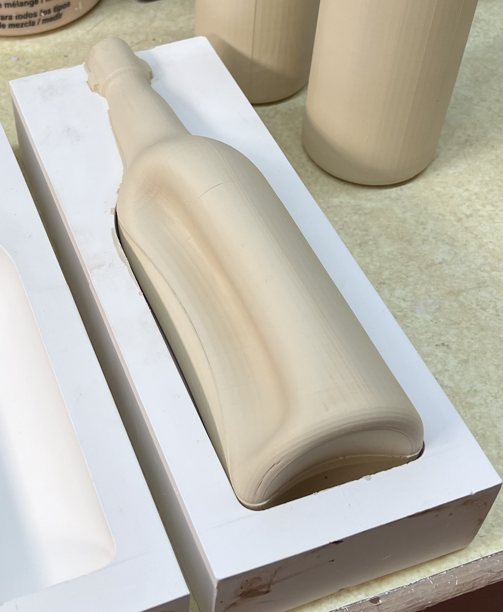

Casting Slip Problems
Casting slips are deflocculated in order to reduce water content. It is important to understand this phenomenon and know how to assess a slurry to know what it needs.
Details
Assuming that the casting slip recipe passes a sanity check for its type (e.g. contains enough clay or the right degree of plasticity and does not contain soluble salts) the issue when problems arise is almost always over or under deflocculation of the slurry. Recipes of % water and deflocculant are fluid, amounts have to be adjusted to deal with changing materials. It is thus important to be able to measure specific gravity, assess viscosity and thixotropy and know what to do when any of them is not within the expected measurement.
Related Information
Here is how vigorously a deflocculated ceramic slurry should be mixed
A video of the kind of agitation needed from a propeller mixer to get the best properties out of a deflocculated slurry. This is Plainsman Polar Ice mixing in a 5-gallon pail. Although it is quite plastic compared to industrial casting slips, it has a specific gravity of 1.76, is very fluid and casts well in the hands of a potter. These properties are a product of, not just the recipe, but the mixer and its ability to put high energy into the slurry.
New Zealand kaolin based slip casts at 1mm thickness. How?

This picture has its own page with more detail, click here to see it.
This is Polar Ice casting, a New Zealand Halloysite based cone 6 translucent porcelain. The base body recipe would never have enough plastic strength to pull itself from this mold without tearing. But the addition of 1% Veegum gives it amazing strength. This dried cast bowl measures 130mm in diameter and 85mm deep, it only weighs 89 gm! The slip was in the mold for only 1 minute before pour-out. Of course, there is a price to pay for adding the Veegum: Increased casting time and more difficult deflocculation. Regular bentonite can be used in most bodies, but for super-whites like this, Veegum (or equivalent) is the choice. Testing is needed to determine what percentage gives the needed strength yet does not increase the casting time too much. The polar ice information page at plainsmanclays.com has very good information, under the heading “Casting Recipe”, about the challenges and trade-offs of using this kaolin in casting bodies.
Over-deflocculated ceramic slurry forms a skin

This picture has its own page with more detail, click here to see it.
In this instance, the slurry forms a skin a few minutes after the mixer has stopped. Casting recipes do not travel well. Over-deflocculation is a danger when simply using the percentage of water and deflocculant shown. Variables in water electrolytes, solubles in materials, mixing equipment and procedures, temperature and production requirements (and other factors) necessitate adapting recipes of others to your circumstances. Add less than the recommended deflocculant to try and reach the specific gravity you want. If the slurry is too viscous (after vigorous mixing), then add more deflocculant. At times, more than what is recommended in your recipe will be needed. After all of this you will be in a position to lock-down a recipe for your production. However flexibility is still needed (for changing materials, water, seasons, etc).
Over deflocculated vs. under deflocculated ceramic slurry

This picture has its own page with more detail, click here to see it.
The slip on the right has way too much Darvan deflocculant. Because the new recipe substitutes a large-particle kaolin for the original fine-particled material, it only requires about half the amount of Darvan. Underestimating that fact, I put in three-quarters of the amount. The over-deflocculated slurry cast too thin, is not releasing from the mold (therefore cracking) and the surface is dusty and grainy even though the clay is still very damp. On my second attempt I under-supplied the Darvan. That slurry gelled, did not drain well at all and it cast too thick. On the third attempt I hit the jackpot! Not only does it have 1.8 specific gravity (SG), but the slurry flowed really well, cast quickly, drained perfectly and the piece released from the mold in five minutes. Interestingly, on a fourth mix I made an error, putting in too much water, getting 1.6SG. The casting behavior was similar to the over-deflocculated slip (even though the Darvan content was much lower). A good casting slip is a combination of a good recipe, the right SG and the correct level of deflocculation.
Over deflocculated slip causes instability in toilet tank

This picture has its own page with more detail, click here to see it.
Sanitary ware factories optimize their slips to have the lowest possible specific gravity for production volume reasons. Potters would be happy with 1.7 SG whereas numbers approaching 1.9 SG are common in factories. They often teeter on the edge of issues like this (sections softening causing localize warping) and inexperienced technicians can be unaware of the critical balances needed to prevent loss in production.
Even slight over-deflocculation of casting slips can be a problem

This picture has its own page with more detail, click here to see it.
This is the L3798E cone 6 buff-burning stoneware slip (it is 35% KT1-4 ball clay, 25% silica, 12% nepheline, 15% EPK, 13% Redart). This recipe was easy to deflocculate to 1.8 specific gravity and yet it was very thin and runny. It pours nicely and does not gel. The former recipe was using a plastic ball clay and this switches it to a larger particle ball clay intended for casting. Thus the amount of deflocculant needed is less. But we did not reduce it, that's why it is so fluid. While not fluid enough to settle out or have poor draining properties, it is nevertheless, slightly over deflocculated. Although pieces can be extracted from the mold quickly, casting time is longer than it should be (for this one 15 minutes for a 2mm thick wall). Another issue is the inside surface: It should feel soapy and smooth in the leather hard state, but it feels sandy! This underscores the need for controlled flocculation (using less deflocculant) to maintain at a slightly more viscous fluidity so that it has thixotropy.
The casting slip did not drain well when pouring this mug

This picture has its own page with more detail, click here to see it.
The slurry contained insufficient Davan deflocculant. During casting it gelled excessively in the mold. Even shaking the piece while pouring out the slip was not enough to loosen it up and get a good drain. If slurry rheology is not right the quality of ware produced is affected like this.
A draining issue with a slip cast bottle
It is turning inside out!

This picture has its own page with more detail, click here to see it.
Why did this happen? There is a perfect storm of factors. Draining, during slip casting, creates suction and slip is heavy (1.8 times heavier than water). And this mold is tall with a narrow neck. So that creates a lot of suction. A slip having inadequate fluidity complicates draining. This round shape, even with printing artifacts, also releases well. How can this issue be avoided?
-Draining the mold carefully, holding it near horizontal for much of the drain.
-Use a well-deflocculated slip.
-Add bentonite to the slip, perhaps 0.5%, to make it stickier and slow down release time (which also slows down the casting time).
-At times, this will happen despite all efforts. In that case, if might be necessary to use a tube (e.g. 1/2 or 5/16”) to pump most of the liquid slip out of the bottle before inverting it. Adapt a 3D printed pour spout to keep the tube centered, at least near the mouth of the bottle.
 PayPal | No tracking, No ads, No paywall, No transient content! Just organized, concise information constantly updated and improved. Was this helpful? Consider supporting me. |
| By Tony Hansen Follow me on        |  |
Got a Question?
Buy me a coffee and we can talk 

https://digitalfire.com, All Rights Reserved
Privacy Policy